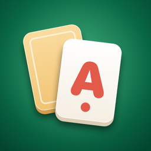

Gizlilik Politikası
Amerikano Okey · Yürürlük tarihi: 12 Kasım 2026
Kısaca
Amerikano Okey'i Halil Anıl Avcı geliştirir. Oyun hesap açmadan oynanır; rehberini ya da konumunu istemez. İstersen Apple veya Google ile giriş yapıp bir kullanıcı adı alabilir, arkadaş ekleyebilir, online masalarda oynayıp sohbet edebilirsin; bunun için tutulan veriler aşağıda anlatılıyor. Oyunun nasıl kullanıldığını anlamak için Google Analytics for Firebase'e birkaç oyun içi olay gönderilir; bunu Ayarlar'dan kapatabilirsin. Ücretsiz sürümdeki reklamlar Google AdMob ile gösterilir. Ödemeler Apple ve Google tarafından alınır.
Cihazında kalan bilgiler
Altın bakiyen, aldığın temalar ve profil resimleri, seçtiğin salon, günlük hediye serin, görev ilerlemen, devam eden turnuva ve oyun ayarların yalnızca kendi cihazında saklanır. Bu bilgiler geliştiriciye ya da başka bir sunucuya gönderilmez ve uygulamayı sildiğinde silinir. Giriş yaptıysan yalnızca turnuva ve birincilik sayıların profiline yazılır.
Giriş, kullanıcı adı ve arkadaşlar (isteğe bağlı)
Giriş yapmayı seçersen hesabın Google Firebase (Firebase Authentication ve Cloud Firestore) üzerinde, Avrupa Birliği'ndeki sunucularda tutulur. Saklananlar:
- Hesap kimliği ve giriş yöntemi (Apple veya Google), giriş sağlayıcısının verdiği e-posta adresi. Apple ile girişte gerçek adresini gizleyebilirsin. Adını istemeyiz ve e-postanı başka bir amaçla kullanmayız.
- Seçtiğin kullanıcı adı, profil resmin (hangi resmi seçtiğin), hesabının oluşturulma tarihi ve turnuva sonuçların (oynadığın turnuva ve birincilik sayısı)
- Arkadaşlık isteklerini ve masa davetlerini açıp kapattığın ayarlar
- Arkadaşların, gönderdiğin ve aldığın arkadaşlık istekleri, engellediğin oyuncular
- Bir kullanıcı adını ya da bir oyuncuyu sohbet yüzünden bildirirsen o bildirim (mesaj metni olmadan)
Kullanıcı adın, profil resmin, katılma tarihin ve turnuva sonuçların giriş yapmış diğer oyuncular tarafından görülebilir. Arkadaş listeni ve engellediklerini yalnızca sen görürsün; bir arkadaşlık isteğini yalnızca gönderen ve alan görür. Altının, satın aldıkların ve oyun ilerlemen yine yalnızca cihazında kalır.
Hesabını istediğin zaman oyunda Profil > Hesabı Sil ile silebilirsin. Silince kullanıcı adın, profilin, arkadaşlıkların, isteklerin ve engellediklerin hemen silinir, Apple ile girişin iptal edilir. Oyuna erişemiyorsan silme isteğini e-postayla da gönderebilirsin; adımlar Hesap silme sayfasında. Bildirimler incelendikten sonra, en geç 90 gün içinde silinir.
Online masalar
Giriş yapıp online masada oynarsan masanın durumu (oturan oyuncuların kullanıcı adları ve hesap kimlikleri, masadaki taşlar, hamleler, puanlar), senin elindeki taşlar, masa kodu ve arkadaşlarına gönderilen masa davetleri Google Firebase (Cloud Firestore ve Cloud Functions) üzerinde, Avrupa Birliği'ndeki sunucularda tutulur. Elindeki taşları yalnızca sen görürsün; masadaki diğer oyuncular yalnızca masanın herkese açık durumunu görür. Masa davetlerini Ayarlar'dan kapatabilirsin. Biten ya da kapanan masaların verileri bir gün içinde silinir.
Online masada sohbet edebilirsin. Yazdığın ya da seçtiğin hazır mesaj sunucuya gönderilir; küfürler yıldızlanır ve mesaj yalnızca o masadaki oyunculara gösterilir. Mesajlar saklanmaz: bir masanın son birkaç mesajı en fazla bir dakika tutulur ve oyun bitince silinir. Sohbeti Ayarlar'dan tamamen kapatabilir, bir oyuncuyu susturabilir, şikâyet edebilir ya da engelleyebilirsin. Şikâyete mesaj metni eklenmez; yalnızca kimin kimi, ne zaman ve hangi sebeple (sohbet) şikâyet ettiği kaydedilir. Bir gün içinde üç farklı oyuncunun şikâyet ettiği oyuncunun sohbeti bir günlüğüne kapanır.
Satın almalar
Altın paketleri, Hoş Geldin Paketi, Reklamsız Oyun ve VIP Kulüp aboneliğinin ödemesi Apple (App Store) ya da Google (Google Play) tarafından işlenir. Kart ve ödeme bilgilerin geliştiriciye ulaşmaz. Uygulama, satın aldığın içeriği teslim etmek için mağazanın verdiği satın alma onayını yalnızca cihazında kullanır.
Altın oyun içi sanal bir birimdir; gerçek para değeri yoktur, paraya çevrilemez ve başkasına aktarılamaz. Aboneliğini istediğin zaman App Store ya da Google Play hesap ayarlarından yönetebilir veya iptal edebilirsin.
Reklamlar (Google AdMob)
Turnuva sırasında, el aralarında da dahil, hiç reklam gösterilmez. Ücretsiz sürümde bir turnuva bittiğinde ya da menüden yeni turnuva başlarken reklam gösterilebilir; ödüllü reklamlar yalnızca sen izlemeyi seçersen açılır. VIP Kulüp üyeleri ve Reklamsız Oyun sahipleri ara reklam görmez.
Reklamları göstermek, ölçmek ve sahtekârlığı önlemek için Google AdMob şu verileri işleyebilir:
- Reklam kimliği: iOS'ta yalnızca takip izni verirsen IDFA; Android'de reklam kimliği
- IP adresi ve ona dayanan yaklaşık konum
- Cihaz ve uygulama bilgileri (model, işletim sistemi, dil)
- Reklamlarla etkileşimler, hata ve performans bilgileri
iOS'ta Apple'ın takip izni sorulur; izin vermezsen reklamlar kişiselleştirilmeden gösterilir ve oyun aynı şekilde çalışır. Avrupa Birliği, Avrupa Ekonomik Alanı, Birleşik Krallık ve İsviçre'de Google'ın izin formu gösterilir; tercihlerini oyunda Ayarlar > Reklam Tercihleri'nden değiştirebilirsin.
Ayrıntılar: Google, ortak uygulamalardaki verileri nasıl kullanır · Google Gizlilik Politikası
Oyun istatistikleri (Google Analytics for Firebase)
Oyunu geliştirmek ve reklamların işe yarayıp yaramadığını görmek için uygulama Google Analytics for Firebase'e birkaç oyun içi olay gönderir: turnuvanın başlaması ve bitişi (salon, bot ya da online, sıralama), izlenen ödüllü reklamın türü ve reklamla açılan profil resmi. Bunlarla birlikte Google, uygulama örneği kimliğini, cihaz ve uygulama bilgilerini (model, işletim sistemi, dil, uygulama sürümü), oturum bilgilerini ve IP adresinden çıkarılan yaklaşık konumu işler. Adın, e-postan, kullanıcı adın ya da reklam kimliğin gönderilmez; reklam izinleri, izin formunda onay vermediğin sürece kapalı başlar. Bu istatistikleri oyunda Ayarlar > Kullanım istatistikleri ile kapatabilirsin. Veriler Google tarafından en fazla 14 ay saklanır.
Çocuklar
Oyun 13 yaşından küçük çocuklara yönelik değildir ve bilerek çocuklardan veri toplamaz.
Hakların
Giriş yapmadıysan geliştiricide senin hakkında hiçbir kayıt yoktur. Giriş yaptıysan hesabına bağlı verileri oyundan silebilir, bir kopyasını ya da düzeltilmesini aşağıdaki adresten isteyebilirsin. Reklam verileriyle ilgili haklarını Google'a karşı kullanabilirsin. Reklam kimliğini iOS'ta Ayarlar > Gizlilik ve Güvenlik > Takip, Android'de Ayarlar > Google > Reklamlar bölümünden kapatabilir veya sıfırlayabilirsin. 6698 sayılı KVKK ve GDPR kapsamındaki soruların için aşağıdaki adrese yazabilirsin.
Değişiklikler ve iletişim
Bu politika değişirse bu sayfa güncellenir ve üstteki tarih değişir. Her türlü soru için: anilavci9@gmail.com
Privacy Policy
Amerikano Okey · Effective: November 12, 2026
In short
Amerikano Okey is developed by Halil Anıl Avcı. The game is played without an account and never asks for your contacts or location. If you choose, you can sign in with Apple or Google to get a username, add friends, and play and chat at online tables; the data kept for that is described below. A few in-game events are sent to Google Analytics for Firebase to understand how the game is used; you can turn this off in Settings. Ads in the free version are served by Google AdMob. Payments are processed by Apple and Google.
Data on your device
Your coin balance, themes and profile pictures, selected room, daily gift streak, mission progress, the running tournament and settings are stored only on your device. They are never sent to the developer or any server and are removed when you delete the app. If you signed in, only your tournament and win counts are written to your profile.
Sign-in, username and friends (optional)
If you sign in, your account is kept with Google Firebase (Firebase Authentication and Cloud Firestore) on servers in the European Union. It holds: the account ID and sign-in method (Apple or Google) and the e-mail address the provider passes on (with Apple you can hide your real address); we never ask for your name and use the e-mail for nothing else. It also holds the username you pick, your profile picture (which picture you chose), the date your account was created, your tournament results (tournaments played and won), your settings for friend requests and table invitations, your friends, the friend requests you sent and received, the players you blocked, and any report you send about a username or a player's chat (without the message text). Your username, profile picture, joining date and tournament results can be seen by other signed-in players; only you see your friends list and blocks, and a friend request is only seen by its sender and receiver. Your coins, purchases and progress still stay only on your device. You can delete your account at any time in the game under Profile > Delete Account: your username, profile, friendships, requests and blocks are deleted right away and Sign in with Apple is revoked. If you can't open the game, you can also ask for deletion by e-mail; the steps are on the account deletion page. Reports are deleted after review, within 90 days at the latest.
Online tables
If you sign in and play at an online table, the table's state (the usernames and account IDs of the seated players, the tiles on the table, moves and scores), the tiles in your hand, the table code and table invitations sent to friends are kept with Google Firebase (Cloud Firestore and Cloud Functions) on servers in the European Union. Only you see the tiles in your hand; the other players see only the table's public state. You can turn table invitations off in Settings. The data of finished or closed tables is deleted within a day.
You can chat at an online table. The message you write, or the quick message you pick, is sent to the server; swear words are starred out and the message is shown only to the players at that table. Messages are not stored: a table's last few messages are kept for at most a minute and deleted when the game ends. You can turn the chat off completely in Settings, and mute, report or block a player. A report carries no message text; it only records who reported whom, when and why (chat). A player reported by three different players within a day has their chat closed for a day.
Purchases
Coin packs, the Welcome Pack, No Ads and the VIP Club subscription are paid through Apple (App Store) or Google (Google Play). Your payment details never reach the developer; the app only uses the store's purchase confirmation on your device to deliver what you bought. Coins are a virtual in-game item with no real-money value; they cannot be cashed out or transferred. You can manage or cancel the subscription at any time in your App Store or Google Play account settings.
Advertising (Google AdMob)
There are no ads during a tournament, not even between hands. The free version may show an ad when a tournament ends or when you start a new one from the menu; rewarded ads only play when you choose to watch one. VIP Club members and No Ads owners see no interstitial ads. To serve and measure ads and to prevent fraud, Google AdMob may process the advertising identifier (on iOS the IDFA only if you allow tracking; on Android the advertising ID), the IP address and an approximate location derived from it, device and app information, ad interactions, and crash and performance data. On iOS you are asked for Apple's tracking permission; if you decline, ads are not personalized and the game works the same. In the EU, EEA, UK and Switzerland Google's consent form is shown; you can change your choices in the game under Settings > Ad Preferences. See how Google uses information from partner apps and the Google Privacy Policy.
Game statistics (Google Analytics for Firebase)
To improve the game and see how ads perform, the app sends a few in-game events to Google Analytics for Firebase: a tournament starting and ending (room, bots or online, placing), the kind of rewarded ad watched and a profile picture unlocked with ads. Along with them Google processes the app instance ID, device and app information (model, operating system, language, app version), session information and an approximate location derived from the IP address. Your name, e-mail, username and advertising ID are not sent; the ad consents start off unless you allow them in the consent form. You can turn these statistics off in the game under Settings > Usage statistics. Google keeps the data for at most 14 months.
Children
The game is not directed to children under 13 and does not knowingly collect data from children.
Your rights, changes and contact
Without signing in, the developer keeps no record about you. If you signed in, you can delete your account data in the game, or ask for a copy or a correction at the address below. You can exercise your rights regarding ad data with Google and turn off or reset the advertising identifier in your device settings. If this policy changes, this page and the date above are updated. Contact: anilavci9@gmail.com